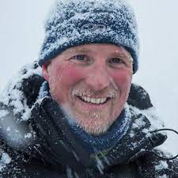
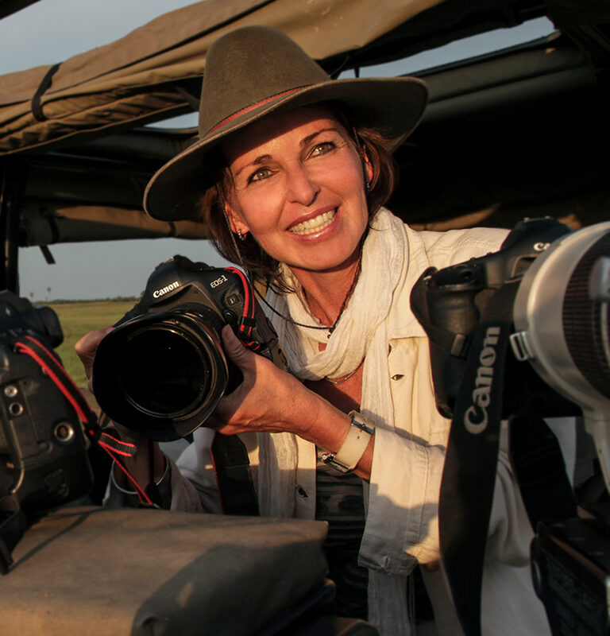

Fotografos destacados
Ami Vitale
Una galardonada fotoperiodista y conservacionista que ha contribuido con su trabajo a National Geographic durante la última década. Nacida en 1971, Vitale ha cubierto historias que abarcan temas como el cambio climático, la vida silvestre y la resiliencia humana. Su estilo distintivo y su enfoque en la conexión entre los seres humanos y la naturaleza la han llevado a obtener reconocimiento internacional. A través de sus imágenes, Ami busca crear conciencia sobre la importancia de proteger nuestro planeta y las especies que lo habitan.
Paul Nicklen
Es un fotógrafo canadiense y biólogo marino que ha sido una figura destacada en National Geographic durante la última década. Nacido en 1968, ha dedicado su carrera a explorar y documentar los paisajes y la vida silvestre del Ártico y la Antártida. Su trabajo se centra en concienciar sobre los efectos del cambio climático en estos frágiles ecosistemas y la importancia de proteger la vida marina. Nicklen ha capturado imágenes impactantes de animales polares en su hábitat natural, mostrando la belleza y fragilidad de estos entornos remotos.
Cory Richards
Es un fotógrafo y alpinista que ha colaborado con National Geographic en diversas expediciones extremas. Sus imágenes impresionantes han documentado ascensos a montañas icónicas como el Everest y el Gasherbrum II, lo que le ha valido reconocimiento en la comunidad de la fotografía y el montañismo. Richards combina su pasión por la aventura con una habilidad excepcional para capturar momentos emotivos y paisajes imponentes, mostrando la belleza y la dureza de los lugares más remotos de la Tierra.
Beverly Joubert
Es una fotógrafa de vida silvestre y conservacionista sudafricana que ha contribuido significativamente a National Geographic en la última década. Junto con su esposo, Dereck Joubert, ha dedicado su vida a documentar la vida de los animales en peligro de extinción en África, especialmente en el delta del Okavango. Su trabajo ha arrojado luz sobre la belleza y la vulnerabilidad de la fauna africana.
